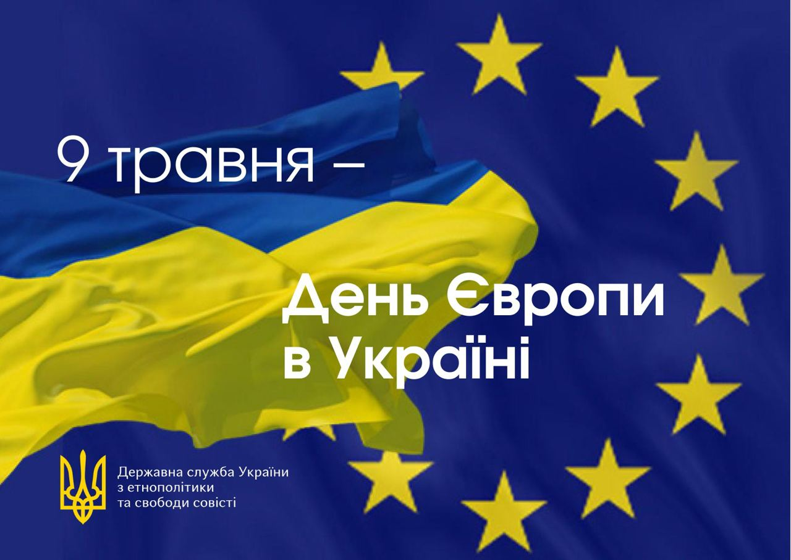

День Європи в Україні
День Європи — це не лише свято прапорів та пісень. Це день, коли ми відчуваємо себе частиною великої європейської родини. Україна вже давно обрала шлях до євроінтеграції — а це означає, що ми поділяємо європейські цінності: свободу, демократію, повагу до прав людини та культуру співпраці.
Цікаві факти про Європу
- Європейський Союз об’єднує 27 країн, а його населення — понад 447 мільйонів людей.
- У ЄС діє принцип «Єдність у різноманітті» — кожна країна зберігає свою культуру, але працює спільно для кращого майбутнього.
- Євро — офіційна валюта в 20 країнах ЄС.
- Найменша країна ЄС — Мальта, а найбільша — Франція.
Що таке євроінтеграція?
Євроінтеграція — це процес, коли країна наближає свої закони, стандарти і спосіб життя до країн Європейського Союзу. Для України це означає:
- Кращі можливості для навчання і подорожей.
- Захист прав громадян.
- Розвиток економіки та нові робочі місця.
- Підвищення якості життя.
Вікторина "Чи знаєш ти Європу?"
- Яка країна першою запровадила євро як валюту?
- Люксембург
- Бельгія
- Франція
- Столиця Європейського Союзу розташована у:
- Страсбург
- Брюссель
- Берлін
- Найбільший острів Європи:
- Ісландія
- Сицилія
- Велика Британія
- Яка країна відома своїми каналами та тюльпанами?
- Бельгія
- Нідерланди
- Данія
- Який європейський прапор складається лише з двох кольорів: синього і жовтого?
- Україна
- Швеція
- Румунія
- Найвища гора Європи — це:
- Монблан
- Ельбрус
- Маттерхорн
- Країна, де винайшли піцу:
- Франція
- Італія
- Греція
- Скільки зірок на прапорі ЄС?
- 15
- 12
- 27
- Найменша країна Європи за площею:
- Монако
- Ватикан
- Ліхтенштейн
- Яка країна відома як "країна тисячі озер"?
- Фінляндія
- Норвегія
- Швейцарія
Чому це важливо?
День Європи допомагає зрозуміти, що майбутнє України — у єдності з іншими країнами Європи. Ми можемо зберегти свою унікальність і водночас бути частиною великої спільноти, яка працює заради миру та розвитку.